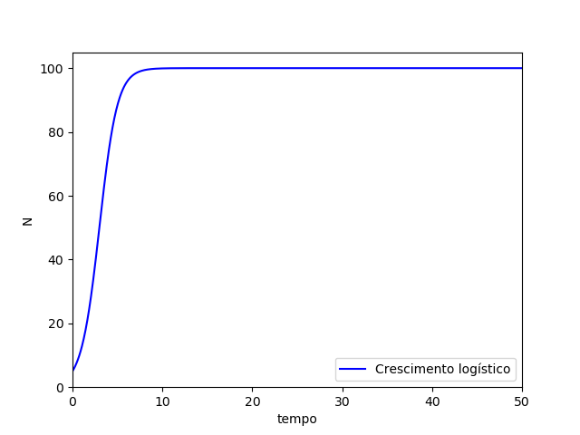
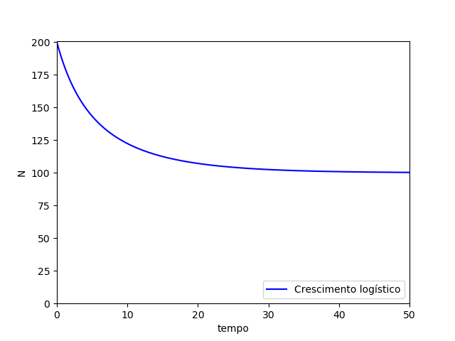

O modelo logístico surgiu para tentar modelar de forma mais realista o crescimento populacional. Esse modelo tenta levar em consideração restrições ao crescimento da população como, por exemplo: restrições ambientais, competição intraespecífica, entre outras. A competição intraespecífica adiciona ao modelo uma regulação da população que depende da própria densidade dessa população.
O modelo de crescimento logístico pode ser representado pela seguinte equação: \[{dN \over dt} = a.N (1 - {N \over K})\] onde a é a taxa de crescimento/natalidade e K é a capacidade de suporte da população N. A capacidade de suporte representa o número máximo de indivíduos que o ambiente suporta ao mesmo tempo. Essa equação nos diz que quando N for igual a K a expressão entre parênteses será zero e portanto a população não vai crescer mais (\({dN \over dt} = 0\)). Para N > K, a população decresce (\({dN \over dt} < 0\)).
Podemos descobrir várias informações sobre um modelo analisando os pontos de equilíbrio e a estabilidade deles. Essa análise será feita a seguir.
Um exemplo de comportamento do modelo logístico é mostrado na figura abaixo.

Observa-se que a população a partir da condição inicial cresce até a capacidade de suporte e permanece nesse valor entrando em equilíbrio.
Outro exemplo de comportamento do modelo logístico é dado abaixo.

Observa-se nesse caso que o valor da população inicial é maior do que a capacidade de suporte, fazendo com que a população decresça até a capacidade de suporte chegando ao equilíbrio novamente.
Implementação computacional
Um exemplo de implementação computacional do modelo logístico na linguagem Python é mostrado abaixo.
#!/usr/bin/env python3
# -*- coding: utf-8 -*-
import matplotlib.pyplot as plt
import numpy as np
import seaborn as sb
def logistico(a, n, K, i):
return a*n[i]*(1 - c*n[i]/K)
N = 1000
n = []
n.append(200) #condição inicial
a = 0.1 #taxa de crescimento
k = 100 #capacidade de suporte
c = 1 #competição intra-específica
t = np.linspace(0, 50, N)
dt = (50 - 0)/N
for i in range(0,N-1):
n.append(logistico(a, n, k, i)*dt + n[i])
"""
Plotando os resultados
"""
ax = plt.axes()
plt.xlim([0, 50])
plt.ylim([0,2*k+1])
plt.xlabel("tempo")
plt.ylabel("N")
plt.plot(t, n, 'b',label="Crescimento logístico")
plt.legend(loc='lower right')
plt.show()